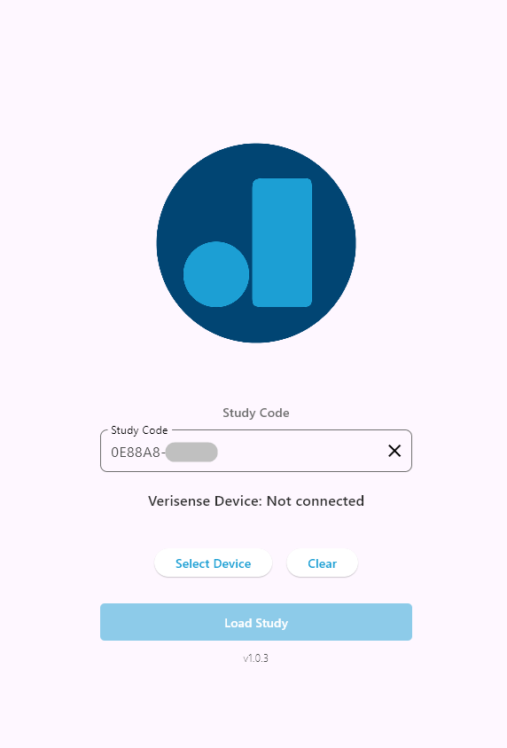

← Go Back
SECTION 5: Study Participation Procedures
The sections below will help you learn how to wear the DIRT watch and connect it to the provided data collection cable and sticky pads. You will need
to do this everytime you want to participate in our research study. Please do this before interacting with the DIRT Research App to start your participation.
⚠️ Warning: For best performance from the DIRT watch, please ensure the watch is charged before continuing further and starting your participation in the research study.
Make sure you see a blinking red LED at the bottom of the watch prior to wearing it. If the red LED is not blinking, please continue to charge the DIRT watch and return later.
Preparing the DIRT watch before participating in a research study
- Wear the DIRT watch on your left wrist and tighten the strap to your comfort level. Please wear the watch comfortably - the strap should not feel too tight!

- Plug in the white data collection cable. Please note the "B" on the micro-usb plug should face up as shown below.

- Take out the sticky pads from its packaging and place two stickies onto your fingers on your left hand as shown below (one pad on your index finger, one pad on your middle finger)
- Snap each of the cable onto the sticky pads on your fingers using the metal nipples.

- You are all good to go! Please make sure the white cable is not too extended (feel free to adjust the watch up and down your wrist for comfort). You can place your hand down on your lap in a comfortable position.
Please do not put pressure onto the white cable and your fingers as this would introduce noise into the data.
Using the DIRT App to start your participation in the research study
- Open the DIRT Research App
- Enter the provided Study Code into the "Study Code" box.

- Connect your DIRT watch to the App by pressing "Select Device" and choosing the device that shows up for you.

- Please wait for a few seconds until you see the battery information of your device. If your battery is less than 50%, please plug your device back in to charge and return to the study later.
- If you are all set with the steps above, you're ready to start! Please press the "Load Study" button to load the study. Once it is loaded, you will see the button to "Start Study". Press that
button to begin the study! Please follow any additional instructions you are provided in the study!
Completing a study
Once the study has completed and you are back on the homescreen of the DIRT Research App, please close down the app using the exit button at the top right corner. Afterward, please follow the
instructions below to remove your DIRT watch and accessories.
- Unplug the white data collection cable from your DIRT watch.
- Peel off the sticky pads and press them together like the image below
- Hold on to the sticky pads and remove the cable from the pads by unsnapping them off. You can throw away the sticky pads, but store the data collection cable somewhere safe for
future study participation.
- Take off your DIRT watch and store them somewhere safe along with the white data collection cable. Please remember to charge your device sufficiently before participating in another study later!
Completing a study: potential issue
⚠️ Warning: At the end of all studies, you will see the screen "Please Wait..." like the one below. At this point, your data is being uploaded and it may take a few minutes.
If more than 10 minutes have passed and your DIRT Research App is still stuck on this screen, please let us know.

If you do get into this problem, press the ⊞ Windows button + Tab button
to show all the apps currently opened and use your mouse to close out of the DIRT App (shown in the image below).

⚠️ Warning: Please do not attempt to participate in the same study a second time. We will have a record of your participation to credit you. Just
contact us to let us know if the study freezes at this last step.